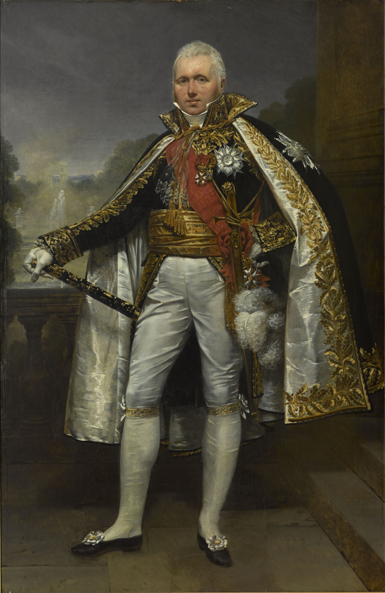
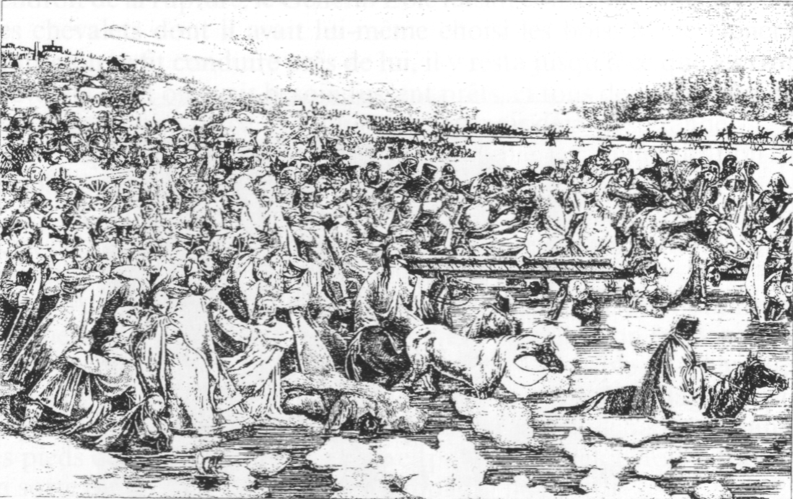
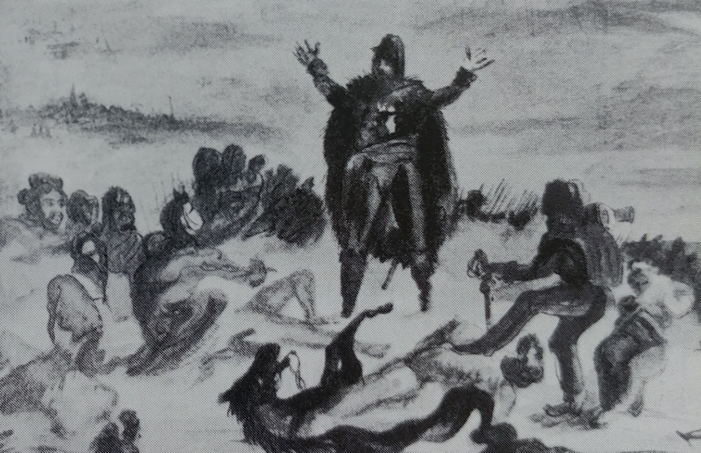
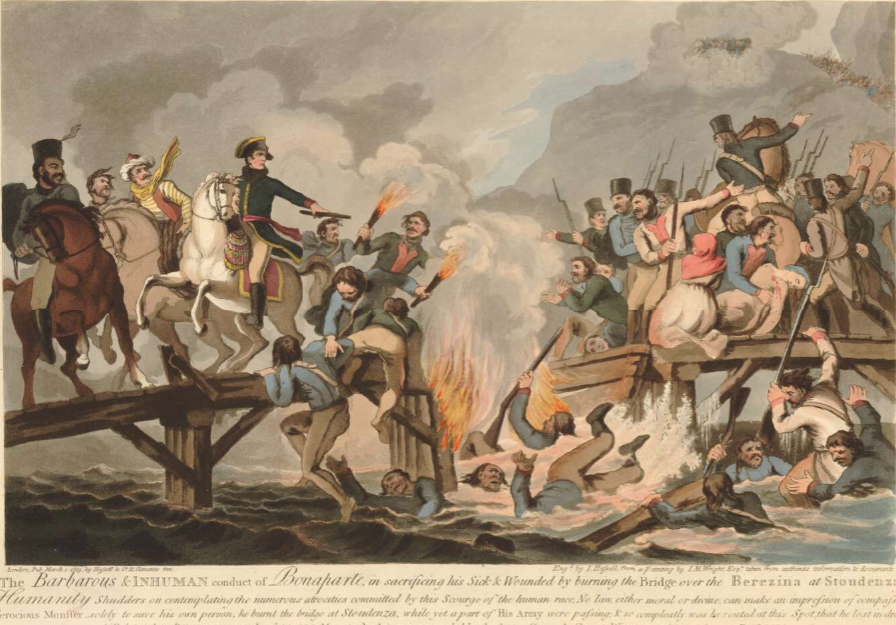
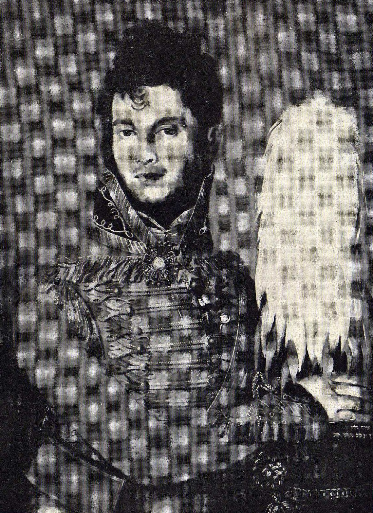

다리는 불타고 있는가? - 베레지나의 여인
게시: 2021-10-11T06:30:49+09:00
비트겐슈타인의 러시아군을 막아내느라, 저녁 8시가 넘어서야 비로소 스투지엔카의 임시 교량 쪽을 일대를 살펴볼 수 있었던 빅토르는 깜짝 놀랐습니다. 생각보다 너무 많은 낙오병들과 피난민들이 아직도 다리를 건너지 않고 있었기 때문이었습니다. 아직 남아 있는 사람들도 서둘러 다리를 건너기보다는, 이제 어둠이 내려앉은 강변 여기저기에 흩어져 모닥불을 피우는 등 밤을 보낼 준비를 하고 있었습니다. 자신의 제9군단이 친 방어선을 정면으로 돌파할 생각을 감히 하지 못하고 오전 일찍부터 그저 원거리에서 포격만 해대던 러시아군에 대해 방어 측이던 그랑다르메가 오히려 공격을 감행했던 것은 오로지 낙오병들과 피난민들의 안전한 철수를 위해서였습니다. 그런데 그렇게 큰 희생을 치루면서 종일 고생했건만, 낙오병과 피난민들은 무엇을 하고 있었길래 아직까지 다리를 못 건너고 있었던 것일까요? 더구나 지금이라도 서둘러 다리를 건널 생각을 하지 않고 한가롭게 모닥불을 피우고 있다니, 피난민들은 어제 다리를 건너지 않고 늑장을 부렸던 대가를 오늘 오후에 혹독히 치루고 나서도 아직 정신을 못차렸던 것일까요? 아무리 군중이 무지하다고 해도 그럴 리는 없었습니다. 낮에 벌어진 전투 동안 뺵빽히 늘어선 피난민의 무리를 향해 날아든 러시아군의 포탄은 그야말로 생지옥을 연출했었습니다. 포탄에 맞아죽은 사람도 많았지만 공포에 사로잡힌 사람들끼리 서로 짓밟는 바람에 압사한 사람들이 더 많을 것으로 추정될 정도였습니다. 문제는 사람과 말이 너무 많이 죽었고, 부서지고 버려진 마차와 수레가 너무 많았다는 점이었습니다. 다리로 향하는 좁은 입구 지역에 그런 시체와 잡동사니들이 너무 많이 쌓이다보니 어지간한 사람이 아니고는 도저히 다리로 접근할 수가 없었던 것입니다. 결국 그런 장애물을 넘어갈 수 없었던 부상자와 병자, 어린 아이가 딸린 여성 및 그 일행 등은 그런 상황 속에서 어둠이 내리고 포화가 잦아들자, 일종의 트라우마 상태에 빠져 어차피 갈 수 없는 다리를 건널 생각을 포기하고 이제 될 대로 되라는 식으로 차가운 들판에 그냥 드러누워 버렸습니다. 빅토르 원수는 제9 군단을 편성하여 러시아로 오기 바로 직전까지 스페인에서 영국군과 스페인 민병대를 상대로 3~4년간 참혹한 전쟁을 치루고 온 사람이었습니다. 그렇게 전쟁에 따른 민중의 고통과 비극에 익숙했던 그에게도 그 광경은 차마 무시하기 어려운 것이었습니다. 빅토르 원수에게 주어졌던 명령은 28일 밤까지 비트겐슈타인을 막아낸 뒤, 즉각 다리를 건너면서 다리를 불태우라는 것이었습니다. 이건 매우 중요한 임무였습니다. 만에 하나 이 두 다리가 러시아군 손에 그대로 넘어간다면 여태까지 죽을 힘을 다해 베리지나 강을 건넌 그랑다르메 전체의 노력이 모두 허사가 되고 모두가 러시아군의 손에 끝장을 맞이할 판국이었으니까요. 빅토르는 군인으로서의 임무와 인간으로서의 연민 사이에서 잠시 고민했습니다.

(빅토르 원수입니다. 나폴레옹보다 5살 연상이었던 그는 18살에 사병으로 입대했다가 10년 복무 기간을 다 채우고 만기 제대하여 평범한 서민 생활을 하다가 프랑스 대혁명 때 자원병으로 재입대하여 장교가 된 독특한 경력의 인물이었습니다. 나폴레옹의 출세 계기가 된 1793년 툴롱 포위전이 승리로 끝난 뒤, 나폴레옹과 함께 장군 계급으로 승진한 사람 중 하나가 빅토르였습니다. 나중에 마렝고 전투에서 공을 세우며 나폴레옹의 눈에 들게 되었고 1807년 프리틀란드 전투 때 공을 세워 원수로 진급했습니다. 1814년 몽뜨로(Montereau) 전투에서 빅토르의 지쳐버린 부대가 너무 늦게 도착한 것에 대해 나폴레옹이 지나칠 정도로 책망을 하며 그의 지휘권을 빼앗자, 그 전투에서 사위를 잃어가며 분전했던 빅토르는 나폴레옹에 대해 깊은 원한을 가지게 되었습니다. 그는 백일천하 때도 부르봉 왕가와 행동을 같이 했고, 덕분에 워털루 전투 이후 국방부 장관까지 지내며 잘 살았습니다.) 대부분의 상식적인 사람들이 그러듯이 빅토르는 결국 절충점을 택했습니다. 제9군단 잔여 병력이 다리를 건너기 위해서는 어차피 먼저 다리 입구에 산더미처럼 쌓인 시체와 잡동사니들을 치워야 했습니다. 그는 에블레 장군의 공병대의 지원을 받아 다리 진입로를 치우고 정비했습니다. 에블레 장군은 이렇게 치워낸 시체들과 부서진 마차 등으로 다리 진입로 외곽에 일종의 바리케이드를 설치했습니다. 혹시라도 아침에 러시아군의 공격이 재개될 때 방어물로 쓰기 위함이었습니다. 진입로가 치워지자마자, 빅토르는 외곽을 지키고 있던 제9군단 부대들을 하나씩 불러들여 다리를 건너게 했습니다. 이런 식으로 11월 29일 오전 1시 경에는 외곽선을 지키는 소규모 분견대를 제외하고는 거의 대부분의 정규 병력이 모두 베레지나를 건넜습니다. 이와 동시에, 빅토르는 그 일대의 벌판에 흩어져 밤을 보내던 피난민들과 낙오병들에게 다리 통행이 가능해졌으니 빨리 다리를 건널 것을 종용했습니다. 지금이 베레지나 강을 건널 마지막 기회이며, 동이 트자마자 다리가 파괴될 것이니 지금 당장 다리를 건너라는 통보였습니다. 많은 사람들이 그 경고에 따라 강을 건너기는 했습니다만, 그럼에도 불구하고 모든 것을 포기한 채 움직이지 않는 사람들도 많았습니다. 낮에 지옥을 겪은데다, 이미 병들고 지쳐 움직일 힘이 없었던 그들은 그렇게 사실상의 죽음을 택했습니다. 이런 피난민들의 행동이 쉽게 이해가 되지 않습니다만, 이때 정규군이든 피난민이든 많은 사람들이 이를 통해 전염되는 티푸스에 걸려 있었다는 점을 생각하면 수긍이 가기도 합니다. 티푸스의 전형적인 증상은 피로, 구토, 발열과 함께 근육의 무기력증도 있거든요. 그 외에도 갖가지 사연이 많았습니다. 가령 아직 베레지나 동편에 남아있던 군의관 퐁티에(Raymond Pontier)는 두 명의 장교가 다리를 건너라는 종용을 들은 척 만 척하고 무슨 일로 시비가 붙었는지 몰라도 진지하게 서로 검을 뽑아들고 결투에 돌입하는 모습을 목격했습니다.

(이 생난리를 또 겪고 싶은 사람은 정말 없을 것입니다. 더군다나 큼직한 유빙이 쉴 새 없이 떠내려오는 강물 속으로 어둠 속에서 뛰어드는 것은 주행성 동물인 인간 심리상 어려운 일입니다.) 진작에 다리를 끊어야 했던 빅토르는 초조해져서 오전 5시가 되자 다리 입구 주변에 아직도 널려있던 마차 잔해 등에 불을 지르도록 했습니다. 미적거리던 피난민들에게 경각심을 주려했던 것입니다. 그리고 다시 병사들을 보내 돌아다니며 '다리는 이제 2시간 후에 무조건 파괴된다, 빨리 건너라'라고 소리치게 했습니다. 사람들 중 몇몇은 이 소리에 일어나 다리를 건넜지만, 피난민들이 비로소 정신을 차린 것은 오전 6시 경이었습니다. 이때 빅토르가 외곽에서 경계선을 펼치고 있던 초계병력들까지 모조리 불려들여 다리를 건너게 했기 때문이었습니다. 이때 피난민들과 낙오병들은 뒤늦은 집단 패닉을 일으켜 새삼스럽게 서둘러 다리로 몰려들었고, 다시 전날 오후처럼 아우성을 치며 서로 먼저 건너겠다고 난리를 쳤습니다. 이때 다시 많은 사람들이 강물에 뛰어들었고 서로 밟아죽이기도 했습니다. 바로 직전까지만 해도 베레지나 다리에는 통행량의 여유가 많아서 이미 건너갔던 병력 중 일부는 부상병 동료들을 찾아보기 위해 다시 동쪽 강변으로 건너오기도 했습니다. 그래서 나폴레옹도 에블레에게 '무슨 일이 있어도 오전 7시에는 다리에 불을 지르도록 하라'고 명령을 전달할 수 있었습니다. 하지만 오전 7시에 그 난리를 겪고 있던 에블레는 한 명이라도 더 구하겠다는 일념으로 다리 소각을 계속 미루었습니다.

(11월 29일 새벽, 지금이라도 빨리 다리를 건너라고 낙오병들과 피난민들을 독려하는 에블레 장군의 모습입니다. 장군이 뭐라고 떠들건 말건 죽은 말의 배를 갈라 가장 먹음직스러운 부위인 염통과 간을 꺼내는 어떤 기병의 모습이 인상적입니다. 당시 현장에 있던 척탄병 프랑수아 필스(Francois Pils)가 그린 그림입니다.) 그러나 이미 너무 늦었습니다. 오전 8시반이 되자, 저 멀리서 러시아군이 진격해오는 것이 베레지나 서쪽에서도 훤히 보였습니다. 심지어 부지런한 코삭 기병들은 이미 다리 코 앞까지 다가와 늘 하던 대로 버려진 짐마차 등을 뒤지며 약탈을 시작할 정도였습니다. 마침내 에블레는 다리를 불사르도록 명령을 내렸고, 공병대는 아직도 피난민들이 다리 위에 있는 채로 불을 질렀습니다. 화약을 써서 다리를 폭파한 것은 아니므로 다리와 함께 수많은 피난민이 죽은 것은 아니었으나 일부는 불타는 다리 위를 내달려 화염을 통과하기도 했고, 일부는 물 속으로 뛰어들었습니다. 그리고 다리 앞쪽이 이미 불타고 있다는 것을 모르고 앞 사람의 등을 계속 떠밀던 피난민들의 압력 때문에 이미 끊어진 다리 가장자리에 온 피난민들도 반강제로 물 속에 뛰어들어야 했습니다. 뒤늦게야 다리에 도착한 피난민들 중 일부도 강물 속에 뛰어들어 도강을 시도했습니다.

(1813년 영국에서 제작된 석판화로서, 베레지나의 다리를 잔혹하게 끊고 자신만 몸을 빼서 달아나는 나폴레옹의 모습입니다. 물론 저 장면은 사실이 아닙니다만, 저 그림 속에 그려진 내용은 사실이며, 나폴레옹이 저 당시에 다리 위에 있지 않았다고 해서 나폴레옹의 책임이 저 그림 속 모습보다 더 가볍다고 할 수는 없습니다. 어떤 경우엔 그림이 사진보다 더 정확한 내용을 전달하는 법입니다.) 11월 29일 아침, 마침내 에블레 장군의 부교병들까지 철수하자 그랑다르메는 이 지옥에서 살아남은 것을 자축하며 질서 정연하게 빌나(Vilna)를 향해 행군을 시작했습니다. 다리가 불타버려 당장 발이 묶인 베레지나 동편의 비트겐슈타인은 속으로 매우 기뻐하며 미적거렸습니다. 치차고프의 러시아군은 그랑다르메가 방어선을 풀고 물러나자 비로소 조심스레 전진하여 베레지나의 도강 지점을 둘러볼 수 있었습니다. 러시아군도 거기에 남은 비참한 광경에 모두 할 말을 잃었다고 합니다. 언제나 그렇듯이 뒤에 남은 것은 부상병들과 아이가 딸린 여성 등 약자들 뿐이었고, 자기 편인 코삭들이 부지런히 벌판에 흩어진 잡동사니에서 건질 것이 없는지 뒤적거릴 뿐이었습니다. 치차고프 휘하에서 복무하던 젊은 프랑스 망명 귀족 출신 중위 드 로슈슈아르(Louis de Rochechouart)는 어떤 여인이 다리 가장자리에 앉아 있는 것을 보았습니다. 그 여자가 움직이지 않았던 이유는 두 다리가 강물 속에 얼어붙어 있기 때문이었는데, 로슈슈아르 중위 일행이 다가가자 그 여자는 꼭 끌어앉고 있던 아기를 쳐들며 아기를 살려달라고 했습니다만 그 아기는 이미 꽁꽁 얼어붙은 시체였습니다. 이 여자도 얼어붙은 상태였는데 대체 어떻게 아직 살아있는지 신기할 정도였습니다. 이 참혹한 광경에, 일행 중에 포함되어 있던 무심한 코삭 기병까지도 참기 어려웠던지 권총을 뽑아들고 이 여자의 관자놀이에 발포하여 그 고통을 끝내주었다고 합니다.

(러시아군에서 복무 중이던 시절의 로슈슈아르 중위입니다. 그는 1812년 당시 24세의 젊은이였습니다. 그는 12세부터 프랑스 혁명에 저항하는 왕당파군에 투신했지만, 정작 프랑스 혁명군보다는 영국의 꼭두각시 노릇을 하며 포르투갈 등에서 싸워야 했습니다. 결국 파리로 돌아와 향락에 젖었던 그는 재산을 다 날리자 이미 러시아로 망명했던 가족을 찾아 프랑스를 떠났는데, 이미 돈이 없었으므로 그 여정이 안락하지는 않았다고 합니다. 그렇다고 막노동을 하며 여비를 번 것은 아니고 밀라노 카지노에서 돈을 딴 덕분에 무사히 오스트리아 빈에 도착하여 친척을 만나 러시아에 건너가 가족들과 상봉하는데 성공했습니다. 그는 러시아군 소속으로 파리에 입성했고, 루이 18세가 파리로 돌아오자 러시아군에 사표를 내고 프랑스군에 입대했습니다. 귀족 가문 자제답게 별 능력은 없어서 별다른 업적은 없고, 나폴레옹 3세가 등극한 뒤에 작은 지방도시 시장을 보냈습니다.) 이렇게 베레지나의 도강 작전은 그야말로 비참하게 마무리되었습니다. Source : 1812 Napoleon's Fatal March on Moscow by Adam Zamoyski https://en.wikipedia.org/wiki/Battle_of_Berezina https://de.wikipedia.org/wiki/Schlacht_an_der_Beresina https://en.wikipedia.org/wiki/Louis-Victor-L%C3%A9on_de_Rochechouart https://www.britishmuseum.org/collection/object/P_1917-1208-3422